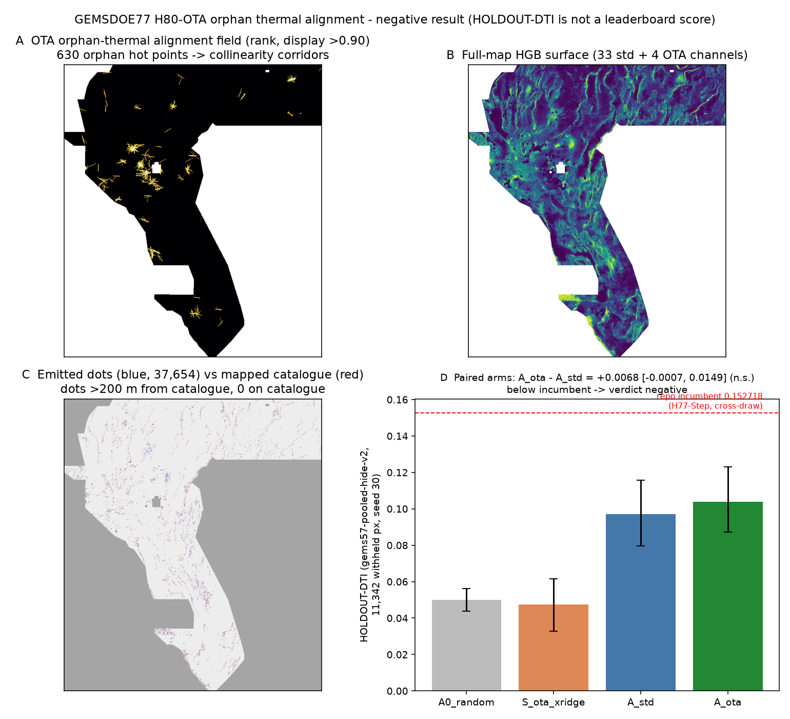

H80-OTA lane: orphan thermal alignment
Verdict: NEGATIVE. Not OK to submit; OK to download for inspection. Selector: not approved. No submission slot was used. This file must not be uploaded.
⬇ H80-OTA file (inspection download only)
Download .tif (133 KB)Same file as one-TIFF .zipCan I submit it? No. Not OK to submit: HOLDOUT-DTI 0.1039 (below the 0.152718 repo
incumbent), the paired gain of the new thermal-alignment channels over the standard stack is not significant
(+0.0068, 95% CI −0.0007 to +0.0149), and 92.4% of its dots lie within 3 px of a sparse registry scarp raster
(limit 70%) — a duplicate under protocol rule 1. Selector: not approved.
Would the portal accept the format? Probably. Every cell is finite and exactly 0 or 1, no nodata tag,
EPSG:32611, 3730×3292, the pinned transform — the “Predicted values must be in range [0, 1]” error cannot
recur with this encoding. Local checks are not an organizer receipt.
Submission name (for reference only) (56 characters)
gems77-h80-orphan-thermal-align-37654dots-20261021-zerosNote (for reference only) (102 characters)
H80-OTA orphan hot-well collinearity HGB 37654 dots; HOLDOUT-DTI 0.1039 seed30; negative do not submitsha256 of the .tif: 703e7dee0a790572c2a9597ed210e04d4d45c93e8bae661aa117b34c0445f4d3
Hypothesis and mechanism
Hypothesis. Wells and springs whose water carries a deep hot-fluid memory — chemical-geothermometer
excess ΔT = max(quartz, chalcedony, cation) − surface temperature ≥ 30 °C with max geothermometer ≥ 90 °C
(tier A), or measured temperature ≥ 40 °C (tier B) — but which lie more than 1 km from every mapped
catalogue fault (“orphans”) are fed by concealed, catalogue-missing faults, and should therefore be
collinear along those faults. Mechanism: weighted azimuth-bin collinearity votes between 654
holdout-orphan points (630 vs the full catalogue), splatted ±4 km along each point’s best-supported azimuth,
intersected with shipped potential-field ridge support (bands 3/5), as four extra channels on the shared
33-channel stack in a gradient-boosted model. Named non-fault mimic: wells drilled along roads,
canals and valley axes, and regional aquifer flow along basin axes. The catalogue is scarp/lineament-led;
a blind fault under basin fill can lack both while still heating wells along strike — that is the population
this lane adds. It differs from H77D/H77-Step, which used distance halos around thermal points with no
collinearity test and no orphan restriction. Ranked candidates:
research/hypotheses-h80-2026-10-21.md; preregistered in
registry/preregistration_h80.json before Experiment 1. Points: GDR submission 1391
“INGENIOUS Great Basin” well/spring temperature & chemistry (gdr.openei.org/submissions/1391,
DOI 10.15121/1881483); potential fields: USGS GeoDAWN;
competition/metric: DrivenData 306 problem description.
Experiments (budget: 3)
| Exp | What | Result (all HOLDOUT-DTI, gems57-pooled-hide-v2, 11,342 withheld px, seed 30) | Verdict |
|---|---|---|---|
| 1 | Leakage canaries (4 OTA fields alone) + OTA surfaces alone vs random | Max single-feature symmetric AUC 0.559 (≤ 0.90, no leakage). Best OTA surface alone 0.0475 [0.0329, 0.0616] vs random 0.0500 [0.0439, 0.0561] — at/below random as an emitter. | Not a standalone driver |
| 2 | HGB with OTA channels vs standard-stack HGB (same folds/sampling/budget/emitter) | A_ota 0.1039 [0.0872, 0.1230] vs A_std 0.0971 [0.0795, 0.1156]; paired Δ +0.0068 [−0.0007, +0.0149] — includes 0; below the 0.152718 incumbent (cross-draw). A_std exactly replicates the XSEN session’s 0.0971 control. | Promotion bar failed |
| 3 | Full-map build, two-phase uniqueness (surface vs 24 local lanes; dots vs 808 fetched registry rasters + 24 local), fail-closed writer | Surface worst Spearman ρ 0.127 (limit 0.90, pass). Dots: 0 identical among 832 compared, but literal overlap 1.0 vs dense witnesses and 0.924 vs a sparse registry scarp raster (limit 0.70). Vs the H33 champion file specifically: ρ 0.029, overlap 0.401 — distinct from the champion, duplicate of the shared stack’s placement territory. | Duplicate — lane stopped |

Invalidated first attempt (IR-H80-04) — read before quoting any other H80 number
The first build rank-transformed the OTA field with scan-order tie-breaking. Because ~98% of footprint
cells are exactly zero, ties became a spurious north–south rank gradient: canary AUC inflated to 0.559 on the
line field itself and the paired gain looked significant (+0.0117 [0.0026, 0.0207], HOLDOUT-DTI
0.1088). Those numbers are invalid (evidence/h80_*_INVALID_ranktie.json). The fix
(tie-averaged ranks, regression test tests/test_h80.py) reduced the gain to the non-significant
+0.0068 above; roughly 40% of the apparent effect was latitude, not geology.
Why 0.2778 (family champion) — and why this lane does not beat it
The 0.2778 file (GEMSDOE32; the file-to-score link is OWNER-REPORTED — GEMSDOE32’s own page states no
organizer score exists for that file) is, measured from its bytes (sha256 c55bafc4…), 37,654 binary dots
spaced ~3 px on the H19-5 ridge set with every dot within 200 m of the catalogue deleted:
evidence/why_02778.json. Under DTI = T/(0.2(T+S−M)+0.8|G|) each dot must earn more than
≈ α·DTI ≈ 0.056 kernel credit; solid lines waste ~2/3 of their mass on redundant cover, and near-catalogue
dots earn ~0 because the organizer scores only unmapped faults. Thinning plus collar-pruning raised credit
per dot 0.053 → 0.090 → 0.109 → 0.118 → 0.125 across the lineage (0.1922 → 0.2477 → 0.2600 → 0.2708 →
0.2778, OWNER-REPORTED). H80’s thermal-alignment evidence neither localizes hidden faults at 100 m alone
(Exp 1) nor significantly improves a standard model (Exp 2), so it supplies none of the extra credit density
needed. The public leaderboard leader was 0.4413 (xiaofanhu, ORGANIZER-CONFIRMED, read 2026-10-21), which at
37,654 dots needs ≈ 0.194 credit/dot — a better detector, not better thinning.
Run card
Full JSON: evidence/run_card_h80.json · Validator: evidence/h80_validator.json
(all checks pass; ok_to_submit: false) · Experiments: evidence/h80_exp1.json,
evidence/h80_exp2.json, evidence/h80_exp3_build.json,
evidence/h80_exp3_compare.json.